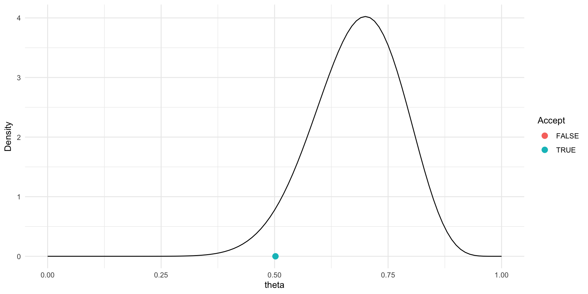
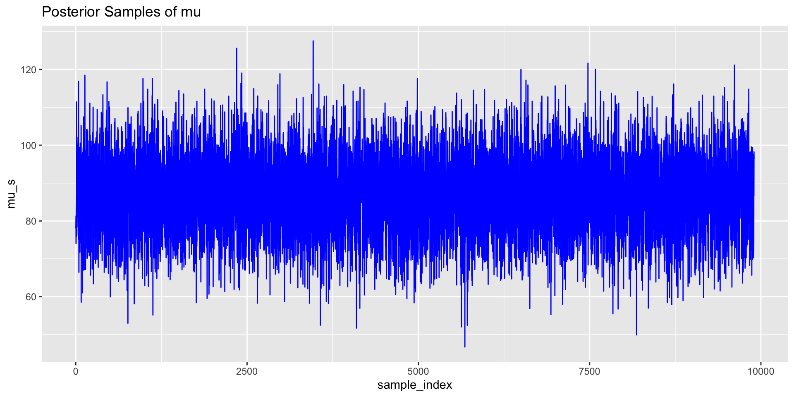
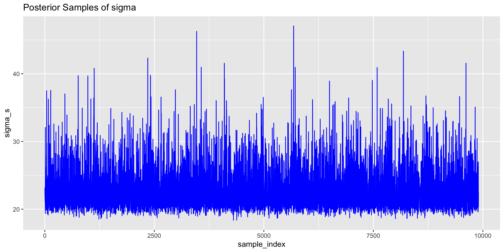
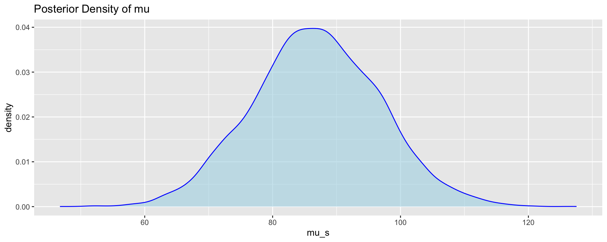
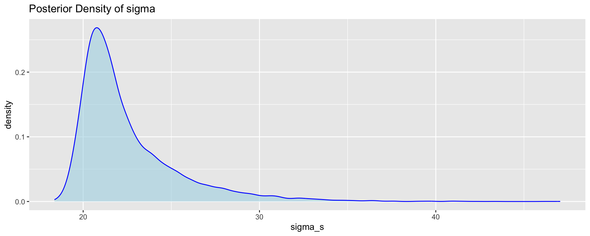

# 0 = rainy, 1 = sunny
# 1. initialize
W_current <- rbinom(1,1,0.5)
# 2. run the Markov Chain
# number of Monte Carlo sampling interations
n_iter <- 10000
# save the samples
W_new <- p_sunny <- rep(NA, n_iter)
for(i in 1:n_iter)
{
W_new[i] <- ifelse(W_current == 0,
rbinom(1,1,0.5),
rbinom(1,1,0.9))
W_current = W_new[i]
# 3. get the probability of sunny
p_sunny[i] <- sum(W_new, na.rm = TRUE)/i
}
plot(p_sunny, type = "l", xlab = "Iteration", ylab = "P(S)")Bayesian Data Analysis
MCMC
Prof. Niamh Cahill (she/her)
What do we know so far?
We can use Bayes’ rule to get posterior densities
Example for single parameter Normal - \(\mu\)
- \(p(\mu|y) \propto p(y|\mu)p(\mu)\)
Example for single parameter Normal - \(\tau\)
- \(p(\tau|y) \propto p(y|\tau)p(\tau)\)
We could also do this for multiple parameters
- \(p(\mu, \tau|y) \propto p(y|\mu,\tau)p(\mu,\tau)\)
BUT…
Realistic problems with multiple parameters, data points, and common choices of priors don’t get a closed-form expression for \(p(\mu, \tau|y)\)
Sampling to the rescue!!
Simulation-based inference (recap)
The general idea in simulation-based inference: We can make inference about a parameter \(\theta\) or \(\mu\) or \(\tau\) , using a sample e.g., \(\{\theta^{(1)}\ldots\theta^{(S)}\}\), from its probability distribution.
Assessing the properties of a target (e.g., posterior) distribution by generating representative samples is called Monte Carlo simulation.
Based on the law of large numbers we know that:
\(\frac{1}{S}\sum_{s=1}^{S}\theta^{(s)} = E(\theta)\)
as sample size \(S \to \infty\)
- The error in the MC approximation goes to zero as \(S \to \infty\) because \(\frac{var(\theta)}{S} \to 0\)
Just about any aspect of the distribution of \(\theta\) can be approximated arbitrarily exactly with a large enough Monte Carlo sample, e.g.,
- the \(\alpha\)-percentile of the distribution of \(\theta\)
- \(Pr(\theta \geq x)\) for any constant \(x\)
Markov Chain Monte Carlo (MCMC)
We’ve already discussed Monte Carlo sampling. Now we’re going to consider Markov Chain Monte Carlo (MCMC) sampling. MCMC algorithms are used for sampling from a target distribution.
Markov Chain
Any process in which each step has no memory of states before the current state is called a (first-order) Markov process and a sucession of such steps is a Markov chain.
The stationary distribution of the Markov chain is the target distribution.
Using MCMC we can construct a set of samples from an unknown target (e.g., posterior) distribution.
A simple Markov chain example
What is the probability of sunny \(P(S)\) and rainy \(P(R)\) weather?
Assume we have the following “transition” probabilities:
\(P(S_{t+1}|R_t) = 0.5\)
\(P(R_{t+1}|R_t) = 0.5\)
\(P(R_{t+1}|S_t) = 0.1\)
\(P(S_{t+1}|S_t) = 0.9\)
Note the future state of the weather only depends on the current state.
Stationary Distributions
As we progress through time, the probability of being in certain states (e.g., rainy or sunny) are more likely than others. Over the long run, the distribution will reach an equilibrium with an associated probability of being in each state.
This is known as the Stationary Distribution.
The stationary distribution of a Markov chain
The stationary distribution of a Markov chain is a probability distribution over the states of the chain that remains unchanged as time progresses.
Mathematically, if \(\pi\) represents the stationary distribution (a row vector of probabilities) and \(P\) is the transition matrix of the Markov chain, the stationary distribution satisfies the equation:
\[\pi = \pi P\]
This means that when the transition matrix \(P\) is applied to \(\pi\), the result is still \(\pi\), indicating that the distribution has stabilized and doesn’t change over time.
Creating the Markov Chain
The “algorithm”
We have to initialize i.e., a randomly chosen start point of sunny or rainy.
We can sample the weather, W, (coded as 1 for sunny and 0 for rainy) from a Bernoulli distribution (Binomial with \(n=1\)).
- The probability distribution will change depending on the current state of the chain, i.e., if W = 1, or W =0.
- Based on the samples of \(W\) we can estimate \(P(W=1) = P(S)\) and \(P(W=0) = P(R)\).
We find after enough iterations (samples) \(P(S) = 0.83\).
R code
MCMC: The Metropolis Algorithm
Suppose we have a target distribution \(p(\theta|y)\) from which we would like to generate a representative sample.
Sample values from the target distribution can be generated by taking a random walk through the parameter space.
The metropolis algorithm
Start at some arbitrary parameter value (initial value).
Propose a move to a new value in the parameter space.
Calculate the acceptance ratio \(r = min \bigg(1, \frac{ p(y|\theta_{pro})p(\theta_{pro})}{p(y|\theta_{cur})p(\theta_{cur})}\bigg)\).
Draw a random number, \(u\) between 0 and 1. If \(u < r\) then the move is accepted*.
Repeat until a representative sample from the target distribution has been generated (more on this later).
*The random \(u\) allows occasional acceptance of worse proposals (with probability \(r < 1\)). This introduces randomness that lets the chain explore the entire parameter space.
Metropolis Algorithm for the Happiness example
Recall for the Happiness example: n = 20 women, y = 14 women reported being happy.
The Metropolis algorithm
\(y \sim Binomial(n = 20, \theta)\)
\(\theta|a,b \sim Beta(a = 1 ,b = 1)\)
Let’s initialise using \(\theta_{cur}\) = 0.5
Propose a new move using a Normal proposal distribution such that \(\theta_{pro} = \theta_{cur} + N(0,\sigma)\)
\(r = \text{min} \bigg(1, \frac{ dbinom(y,n,\theta_{pro})dbeta(\theta_{pro},a,b)}{dbinom(y,n,\theta_{cur})dbeta(\theta_{cur},a,b)}\bigg)\)
Compare \(u \sim Uniform(0,1)\) with \(r\) and accept move if \(u < r\)
Repeat
Visualise the samples and look for a ‚Äúfuzzy caterpiller‚Äù üêõ
R code
# data
y <- 14; N <- 20
# beta prior parameters
a <- 1; b <- 1
# number of samples to generate
n_iter <- 10000
# 0.
theta_cur <- rep(NA, n_iter)
theta_cur[1] <- 0.5
for(i in 1:(n_iter-1)){
# 1.
theta_pro <- theta_cur[i] + rnorm(1,0,sd = 0.2)
# 2.
if(theta_pro<0|theta_pro>1){r <- 0 } # set to zero if theta outside [0,1]
else {
r <-
min(1,dbinom(14,20,theta_pro)*dbeta(theta_pro,a,b)/
dbinom(14,20,theta_cur[i])*dbeta(theta_cur[i],a,b))
}
# 3.
u <- runif(1,0,1)
accept <- u < r
theta_cur[i+1]<- ifelse(accept,theta_pro,theta_cur[i])
} # end i loop
plot(theta_cur, type = "l")Metropolis Algorithm for the Happiness example
Trace plot and chains for \(\theta\)
Traceplots provide a visual tool for monitoring convergence of an MCMC chain towards a target distribution (i.e., the posterior).
In general we look for a stationary plot where the sample values display a random scatter around a mean value.
We typically initialise MCMC algorithms at 3 different start points to see if all chains end up in (converge to) the same place.
Metropolis algorithm for the Kid IQ example
Recall that data (y) are available on the cognitive test scores of three- and four-year-old children in the USA. The sample contains 434 observations.
\(y_i|\mu,\sigma^2 \sim N(\mu, \sigma^2)\). Assume \(\sigma^2\) is known where \(\sigma = 20.4\)
\(\mu|\mu_0,\sigma_0 \sim N(\mu_0 = 80, \sigma^2_{_0} = 10^2)\)
Let’s initialise using \(\mu_{cur}\) = 80.
Propose a new move using a Normal proposal distribution such that \(\mu_{pro} = \mu_{cur} + N(0,1)\).
Calculate the acceptance ratio on the log scale (avoids numerical instability).
\(log(r) = \text{min}(0, \sum_i log(dnorm(y_i,\mu_{pro},\sigma)) + log(dnorm(\mu_{pro},\mu_0,\sigma_0))\) \(- \sum_i log(dnorm(y_i,\mu_{cur},\sigma)) - log(dnorm(\mu_{cur},\mu_0,\sigma_0)))\)
- Compare \(u \sim Uniform(0,1)\) with \(r\) and accept move if \(log(u) < r\).
Task: Code this in R and produce a trace plot for \(\mu\).
Bayesian Inference for \(\mu\) and \(\sigma\) (the Kid IQ example)
It is more realistic to assume \(\mu\) and \(\sigma\) are unknown.
In this case we need priors for both parameters and we think about them jointly.
Then from Bayes’ rule we can get the joint posterior \(p(\mu, \sigma |y) \propto p(y|\mu, \sigma)p(\mu,\sigma)\)
Problem: most choices of prior will not result in a closed from expression for the posterior.
Solution: If we can sample from the target (posterior) distribution we can still do inference.
The Metropolis method is very useful but can be inefficient. Another sampling method that’s often used for models with multiple parameters is Gibbs sampling.
MCMC: The Gibbs Sampler
We can use Gibbs Sampling when we can sample directly from the conditional posterior distributions for each model parameter.
So instead of trying to sample directly from a joint posterior distribution, we sample parameters sequentially from their complete conditional distributions (conditioning on data as well as all other model parameters).
The Gibbs sampling algorithm for \(\mu\) and \(\tau\)
Assign initial values to the parameters \(\mu^{(1)}\) and \(\tau^{(1)}\)
Given starting values \(\mu^{(1)}\) and \(\tau^{(1)}\), draw samples s = 2, 3,….,`some large number’ as follows:
1.1. sample \(\tau^{(s)}\) from \(p(\tau|y,\mu^{(s-1)})\).
1.2. sample \(\mu^{(s)}\) from \(p(\mu|y,\tau^{(s)})\)
Repeat and this will (eventually) generate samples from \(p(\mu,\sigma|y)\), which is what we want!
Remember those complete conditional distributions?
Recall for the Normal likelihood \(y_i|\mu,\sigma^2 \sim N(\mu, \sigma^2)\) where \(\sigma\) is known and a Normal prior \(\mu \sim N(\mu_0, \sigma^2_{_0})\), we get a posterior for \(\mu\) that is also a normal distribution (i.e., we used a conjugate prior)
\[\mu|y \sim N \bigg(\frac{\mu_0/\sigma^2_{0}+ n\bar{y}/\sigma^2}{1/\sigma^2_{0}+n/\sigma^2}, {\frac{1}{1/\sigma^2_{0}+n/\sigma^2}}\bigg)\]
Recall for the Normal likelihood \(y_i|\mu,\sigma^2 \sim N(\mu, \sigma^2)\) where \(\mu\) is known and a Gamma prior \(\frac{1}{\sigma^2} = \tau \sim Gamma(a, b)\) we get a posterior for \(\tau\) that will also be a gamma distribution
\[\tau|y \sim Gamma \bigg(a + n/2, b + 1/2\sum_{i=1}^n (y_i - \mu)^2\bigg)\]
These are the complete conditionals. We know the posterior distribution for one parameter conditional on knowning the other parameter(s). Now we can use Gibbs sampling.
Gibbs sampling algorithm for the Kid IQ example
Recall data (y) are available on the cognitive test scores of three- and four-year-old children in the USA. The sample contains \(n=434\) observations.
\(y \sim Normal(\mu, \sigma^2)\)
\(\mu \sim Normal(80 ,10)\) \(1/\sigma^2 = \tau \sim gamma(1 ,1)\)
Let’s initialise using \(\mu^{(1)} = 80, \tau^{(1)} = 1\)
Given starting values \(\mu^{(1)}\) and \(\tau^{(1)}\), draw samples s = 2, 3,….,`some large number’ as follows:
1.1. sample \(\tau^{(s)}\) from \(p(\tau|y,\mu^{(s-1)})\).
1.2. sample \(\mu^{(s)}\) from \(p(\mu|y,\tau^{(s)})\)
Repeat and this will (eventually) generate samples from \(p(\mu,\sigma|y)\), which is what we want!
## Data
y <- kidiq$kid_score
n <- length(y)
## Prior parameters
mu0 <- 80; sigma.mu0 <- 10 # for normal prior (for mu)
a <- 1; b <- 1 # for gamma prior (for tau)
n_iter <- 10000 ## choose # iter
## create objects to store results
mu_s <- tau_s <- sigma_s <- rep(NA, n_iter)
## 0. Initialise
mu_s[1] <- 80; tau_s[1] <- 1; sigma_s[1] <- 1
## define parameters for gamma posterior on tau
post.a = a + n/2; post.b = 1/2*(sum((y-mu_s[1])^2))
## 1.
for(s in 2:n_iter){
## 1.1 sample from complete conditional for tau
tau_s[s] <- rgamma(1,post.a,post.b)
sigma_s[s] <- sqrt(1/tau_s[s]) # transform to sigma
## update posterior parameters for mu
mupost.mean = (mu0/(sigma.mu0^2) + tau_s[s]*n*mean(y))/(1/(sigma.mu0^2) + tau_s[s]*n)
mupost.sd = sqrt(1/(1/(sigma.mu0^2)+tau_s[s]*n))
## 1.2 sample from complete conditional for mu
mu_s[s] <- rnorm(1,mupost.mean,mupost.sd)
## update posterior parameters for tau
post.a = a + n/2
post.b = b + 1/2*(sum((y-mu_s[s])^2))
} # end s loopOutput from MCMC
MCMC samples are not independent draws from a target distribution:
The first draw is not a random draw from the target distribution and tuning of MCMC parameters may occur at the start of a chain.
Subsequently, draw s + 1 depends on draw s: the samples may be autocorrelated.
We can use samples from an MCMC algorithm to do inference but ONLY IF
We exclude samples from the initial period (burn-in).
We “wait long enough” to get a set of samples that are representative of the target (posterior). distribution.
# A tibble: 9,900 × 3
sample_index mu_s sigma_s
<int> <dbl> <dbl>
1 1 85.7 21.7
2 2 86.2 20.8
3 3 87.8 20.2
4 4 87.9 21.5
5 5 86.6 21.1
6 6 87.0 19.9
7 7 87.7 19.6
8 8 86.1 21.0
9 9 87.7 19.9
10 10 86.8 20.6
# ℹ 9,890 more rowsOutput from MCMC: trace plots
We can use trace plots to investigate the MCMC samples/chains for the parameters.
library(ggplot2)
# Trace plot for mu
p1 <- ggplot(post_samps, aes(x = sample_index, mu_s)) +
geom_line(colour = "blue") +
ggtitle("Posterior Samples of mu")
# Trace plot for sigma
p2 <- ggplot(post_samps, aes(x = sample_index, sigma_s)) +
geom_line(colour = "blue") +
ggtitle("Posterior Samples of sigma")
p1;p2

Output from MCMC: joint parameter plots
We can visualise the joint posterior distribution of the parameters based on the MCMC samples.

Output from MCMC: density plots and summaries
We can visualise and obtain summaries for the marginal posterior distributions of the parameters based on the MCMC samples.
# Density plot for posterior samples of mu
p5 <- ggplot(post_samps, aes(x = mu_s)) +
geom_density(fill = "lightblue",
color = "blue",
alpha = 0.6) +
ggtitle("Posterior Density of mu")
# Mean and credible interval for mu
mu_mean <- mean(mu_s)
mu_ci <- quantile(mu_s, probs = c(0.025, 0.975))
p5;cat("Mean of Mu:", mu_mean, "\n");cat("95% Credible Interval for Mu:", mu_ci, "\n")
Mean of Mu: 86.72347 95% Credible Interval for Mu: 84.80829 88.58212 p6 <- ggplot(post_samps, aes(x = sigma_s)) +
geom_density(fill = "lightblue",
color = "blue",
alpha = 0.6) +
ggtitle("Posterior Density of sigma")
# Mean and credible interval for sigma
sigma_mean <- mean(sigma_s)
sigma_ci <- quantile(sigma_s, probs = c(0.025, 0.975))
p6;cat("Mean of Sigma:", sigma_mean, "\n");cat("95% Credible Interval for Sigma:", sigma_ci, "\n")
Mean of Sigma: 20.40462 95% Credible Interval for Sigma: 19.0815 21.81461